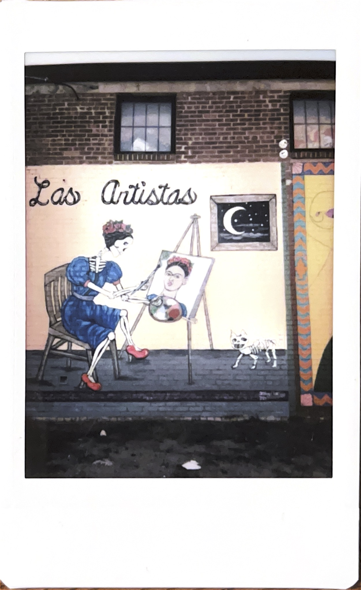
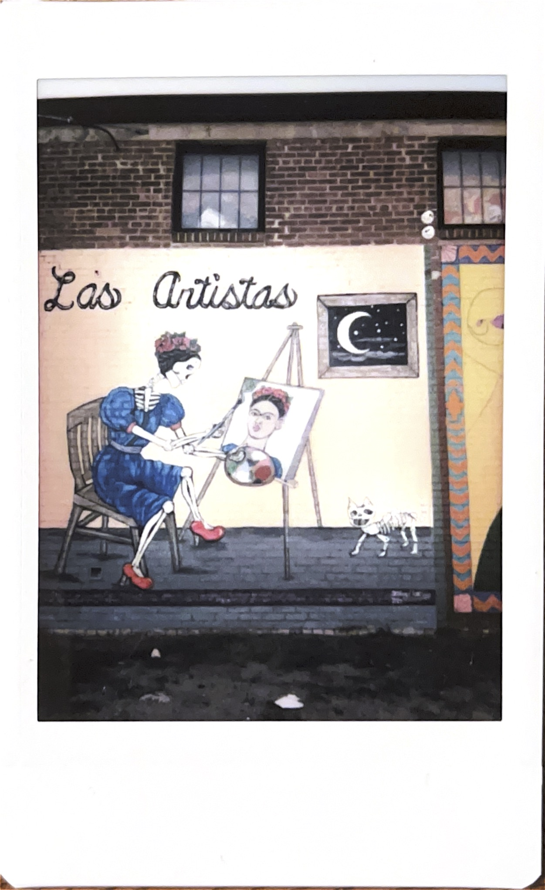

Let's talk about the geographic implications of being in Tulsa. Given our surroundings, it's no secret we are a blue dot in a red state (and sometimes not even that). This serves as a deterrent for many. While I understand the desire to leave, especially from those who are directly impacted by the political climate of the state, it disappoints me to see those privilaged and able to enact change turning their back on a city with so much potential. "Getting out of here" only leaves those sticking it out or unable leave in the dust.
As Tulsa natives, we have a responsibility to contribute to the city's upwards trajectory and share ideas, arts, and experiences to better our community. Oklahoma is home to the highest concentration of Native American culture and we must continue to fight for visibility and preservation of that heritage. Greenwood is educating, flourishing, and creating a safe space. We're gaining several "country inspired" establishments that are proudly progressive. People are putting in the work and things are shifting, and while there is so much to celebrate, we are capable of even more if we show up and show out.
While I want to advocate for the marginalized in Tulsa, I also recognize it's not my place to speak on anyone's behalf. What I can do, and what we all can do, is appreciate, support, and elevate. Visit culture specific museums, shop local, and stay awhile. Vote. Play your part.
 

What I feel I can speak on, is the cowboys, honky-tonk, and "white-trash" element of living here. I used to have a disdain for all things country, but I have turned a new leaf. This region of the U.S. has such a rich and distinct lifestyle that we can approach with pride (while still acknowledging the past and present flaws). Southern hospitality exists in a way here not found elsewhere. You know what's also good fun? Accessorizing with cowboy hats, boots, and bolo ties. Don't you get a little tickle when someone says you have a bit of an accent? We can embrace these parts of country lifestyle, see it for the better, and make it our own. Country couture.
Explore some history and variety of cultures we all share on this common land:
Coffee and liberating literature